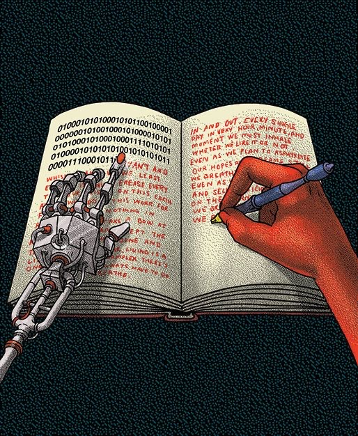

Marijuana Testing & Use Discrimination
On Canva, my presentation for SPECS004 discusses work place marijuana testing and discrimination use .
Understanding Undergraduate Research
I've crafted a video that gives undergraduates a more in-depth tutorial in pursuing undergraduate research.
Blanche's Boon
In this video essay, I analyze the mistreated Blanche Hudson from the classic film: What Ever Happened to Baby Jane?

Digital Humanities Dataset
On Constellate, I analyze the history of Lady Macbeth as a Biblical Eve figure.